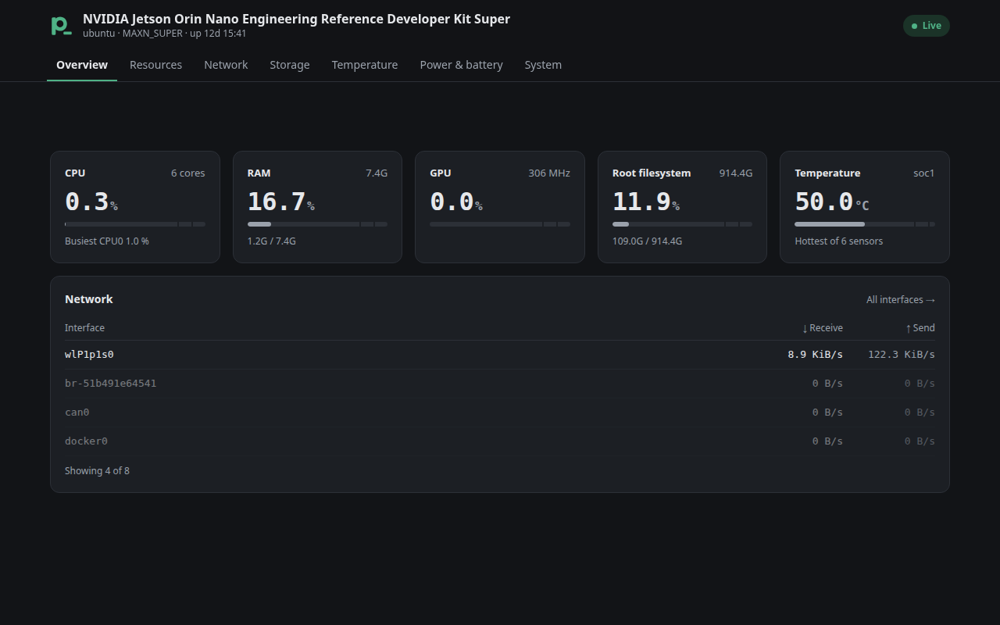
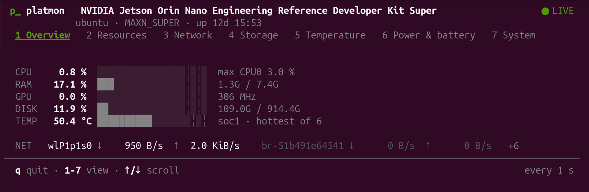

Small footprint
Under 1% of one core and about 11 MiB of memory over 24 hours on a Jetson Orin Nano, while a Hub-like client polled it (1.8.1).
Measurements ↗LIGHTWEIGHT PLATFORM MONITOR
Jetson, Raspberry Pi and other Linux boards, and Windows 11 PCs.
One small service collects; read it in the terminal, on the web, in the tray or over HTTP.
One static binary of about 1.5 MB · No Python · Apache-2.0

01 / ON THE DEVICE
One background service reads the device once a second. Every view reads the same results, so opening more of them adds no work on the device.
Under 1% of one core and about 11 MiB of memory over 24 hours on a Jetson Orin Nano, while a Hub-like client polled it (1.8.1).
Measurements ↗The server and the platmon command are static binaries. No Python, pip, Node or database on the device.
GPU/NPU, memory pressure, storage, temperatures, power rails, fans, power mode, battery, Wi-Fi signal and TCP probes, where the hardware provides them.
A missing reading is unavailable with a reason, never a zero. Every answer carries its age, and stale data is not shown as current.
* Sensor coverage depends on the hardware and the operating system.
02 / ONE COLLECTION, MANY VIEWS
Collection runs on its own schedule. Requests never trigger a device read.
platmon for a live view, keys 1–7 to switch views, platmon --once for scripts.http://<device>:9797 in a browser.
One package, and the service starts.
Install platmon →